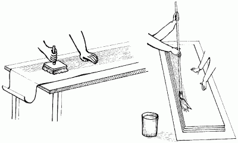
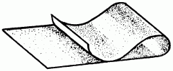

Подготовка обоев.

После подготовки поверхностей приступают к подготовке материалов для оклеивания потолков. Возникает вопрос, сколько рулонов обоев нужно купить. Это прежде всего зависит от площади самой комнаты. К примеру, предстоит оклеить обоями комнату 4 х 3 м. Сначала определяют периметр комнаты:
(4 + 3) х 2 = 14 м.
Затем делят полученный периметр на ширину обоев, например 0,5 м:
14: 0,5 = 28.
Это и есть искомое число, то есть именно столько полотен вам понадобится для вашей комнаты. В одном рулоне может быть около 10 м обоев, а значит, его хватит для трех полотен. Теперь узнаем количество рулонов обоев, необходимых для оклеивания одной комнаты:
28: 3 = 9,3 рулона.
Рекомендуется приобретать на 1 рулон больше на случай непредвиденного ремонта.
Теперь готовим обои. Заключается эта процедура в следующем: у обоев обрезают одну или две кромки, причем строго по имеющейся линии, и разрезают рулоны на отдельные полотна. Обои наклеивают либо встык, либо внахлест. В первом случае так поступают с обоями среднего и высшего качества, а тонкие обои обычно наклеивают внахлест. В этом случае кромку накладываемого полотна следует обращать к свету, для того чтобы тень, падающая от шва, не подчеркивала линию стыка. Таким образом, если вы оклеиваете потолок по правую сторону от окна, вы должны обрезать левую кромку, и если оклеиваете с левой стороны – то правую кромку.
Прежде чем приступить к отрезке второго полотна, следует проявить максимальную аккуратность и совместить предварительно рисунок, чтобы на потолке он был цельным. При отрезке полотна по горизонтали оставляют на всякий случай небольшой излишек в длину – иногда в процессе наклеивания клейстером обои дают небольшую усадку. В любом случае излишек все-таки лучше, чем нехватка. А лишнюю часть всегда можно обрезать специальным ножом со сменными лезвиями.
Нарезанные полотнища обоев укладывают лицевой стороной к полу (его предварительно застилают газетами или полиэтиленовой пленкой), причем боковая кромка каждого следующего полотна должна выступать в сторону примерно на 2 см – это делается для того, чтобы не испачкать клеем лицевую сторону обоев. После этого с помощью валика (или маховой кистью) наносят клей на тыльную сторону полотна.

Нанесение клейстера на обои.
Тонкие бумажные обои промазывают клеем один раз, а более плотные – два.
Затем полотна складывают, точно совместив при этом края обоев намазанной стороной внутрь (рис. 9). Сложенное таким образом полотно снова складывают так, чтобы оба конца находились на середине. Обои следует оставить в таком положении на 15 минут, если они тонкие, и на 25 минут, если они плотные.

Рис. 9. Складывание обойного полотна для пропитки клейстером.
Обои складывают гармошкой и поочередно прижимают к потолку участки, ограниченные складками. Уже приклеенную часть следует тщательно разгладить.
Обои нужно наклеивать в направлении света от окон. Для формирования стыка потолка со стенами край обрезают на 5–10 мм длиннее и заводят на стену. В дальнейшем при оклеивании стен места стыков закрывают специальным декоративным кантом или обоями.
Плотные обои обычно приклеивают впритык, для чего требуется срезать кромки с двух сторон. Для этого нужно использовать не ножницы, как бы остры они ни были, а уже не раз упомянутый нами нож со сменными лезвиями. Обрезку следует производить по рейке необходимой длины.
Во время работы следует соблюдать определенный режим. Нельзя, к примеру, открывать окна и двери во избежание появления сквозняков; пока обои полностью не просохли, помещение должно быть наглухо закрыто. Нельзя также подвергать их воздействию солнечных лучей, лучше закрыть окна шторами. Несмотря на то что под действием солнечных лучей высыхание происходит быстрее, нет гарантии, что рисунок местами не выцветет.
На период высыхания обоев температура в помещении не должна превышать 23 °C.
Некоторые для того, чтобы ускорить процесс высыхания, используют различные нагревательные приборы; делать этого ни в коем случае нельзя. Под действием повышенной температуры обои начнут быстрее высыхать, коробиться и рваться. Включать нагревательные приборы можно только спустя сутки в теплое время года и спустя трое суток в холодное.